📺 Watch the video first (about 4 minutes)
Tap the ▶ play button. Turn the sound up.
Opening the app
On the tablet, tap 🔒 Hosts, type your PIN, then tap 📒 Host Book. You do not need the internet.
Checking in a camper
1
Tap “Check In a Camper”It's the big green button on the home screen.
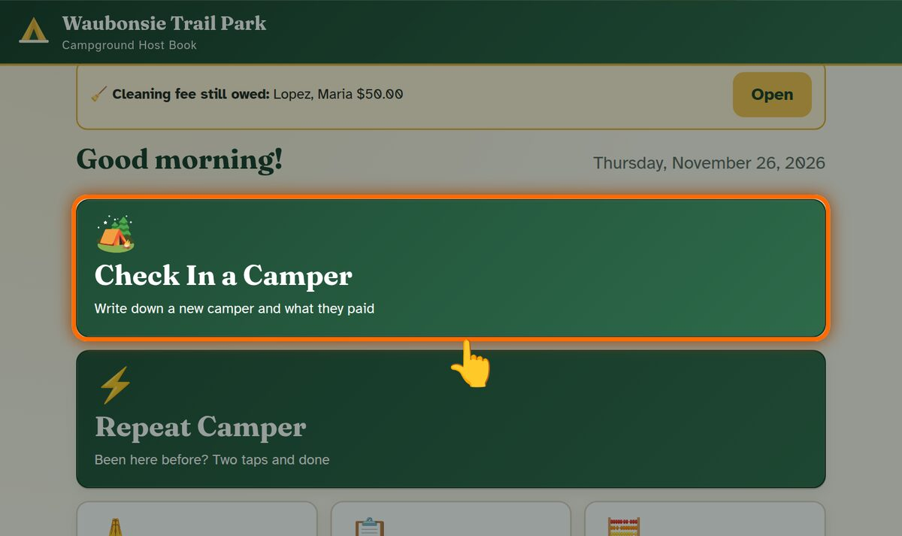
2
Type the name and site numberTap the box, and a keyboard pops up. The date is filled in for you. Leave the site number empty for a cabin.
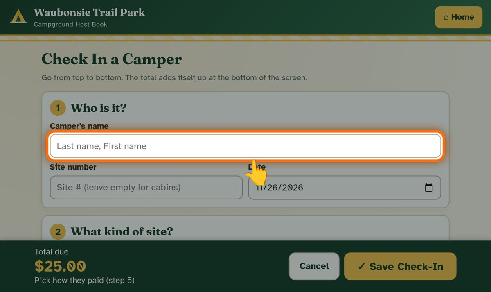
3
Tap the kind of siteFull Hookup, Electric + Water Only, Rustic Cabin, ADA Cabin, or Tent. Your choice turns green.
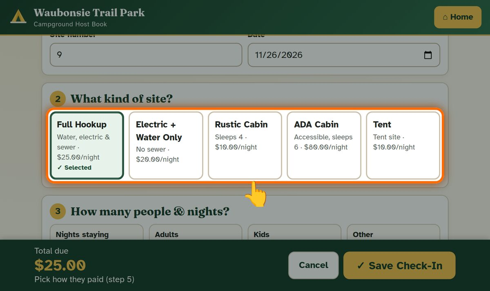
4
Tap + or − for nights and peopleThen add wood bundles, a cleaning fee, or a donation, but only if they have one.
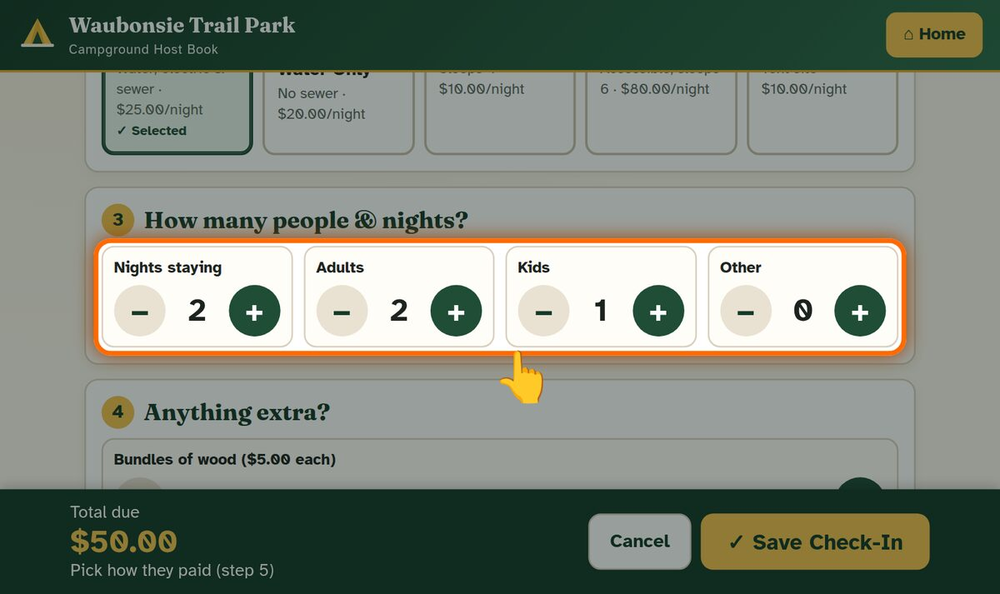
5
Tap how they paidCash, Check, or Credit. For a check you can type the check number. A tip for you goes in the 🙏 Tip for the hosts box (step 4), not in the total.
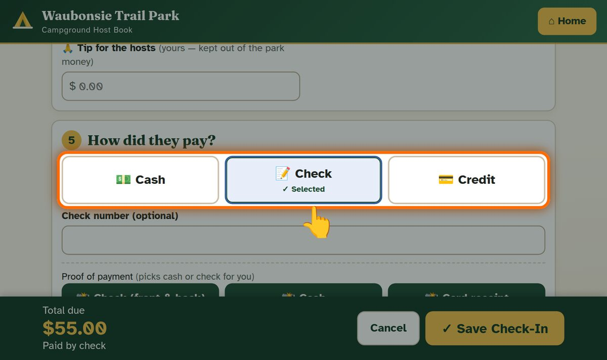
📸
Snap a photo as proof of paymentCheck: tap “Check (front & back)”. Take the front, flip the check over, take the back.
Cash: one picture of the bills. Card: a picture of the receipt — never the card itself.
The date and time are stamped on every picture, and the app tries to read the check number for you.
Cash: one picture of the bills. Card: a picture of the receipt — never the card itself.
The date and time are stamped on every picture, and the app tries to read the check number for you.
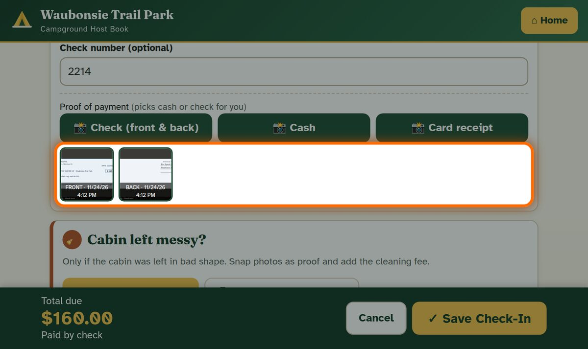
6
Tap the yellow “Save Check-In” buttonThe total at the bottom adds itself up. If they paid a different amount, type it in the “Amount actually paid” box first.
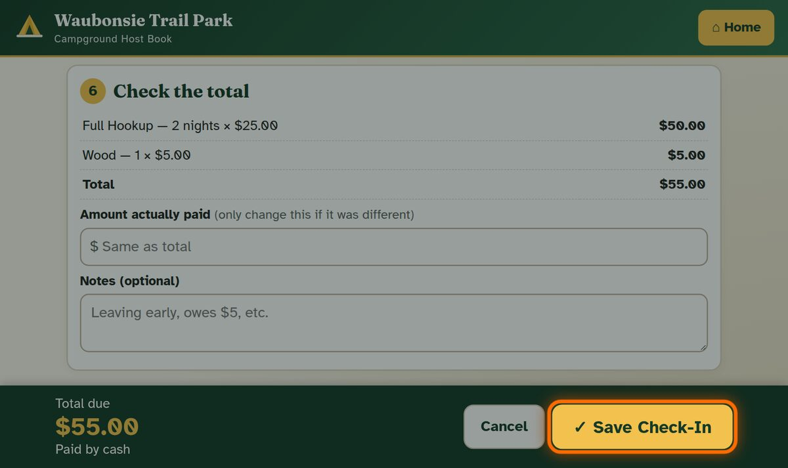
✋ If you forget something, the app tells you what's missing. Nothing is lost.
Camper been here before? (fast check-in)
⚡
Tap “Repeat Camper”, tap their name, tap how they paidTheir site, people and nights fill in from last time. That's it! It offers to take the proof photo too. Tap Change something if anything is different.
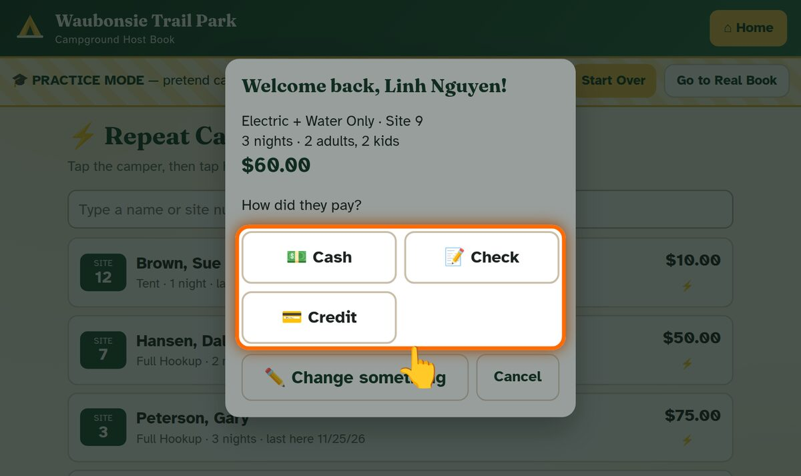
Cabin left messy?
🧹
Open that camper → “Cabin left messy?”Tap 📸 Photo of the mess (take as many as you need), type what was wrong and the cleaning fee. When they pay it, tap how they paid and snap the payment. A reminder stays on the home screen until it's paid. Tap 🖨 Print proof for the file for a paper record with the pictures.
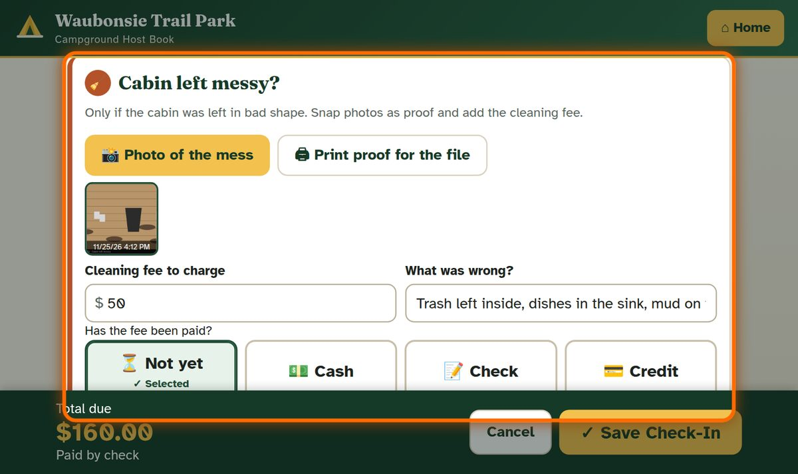
Fixing a mistake
✎
Tap the camper on Today's SheetChange anything, then tap Save again. To remove them, scroll down and tap the red Delete button.
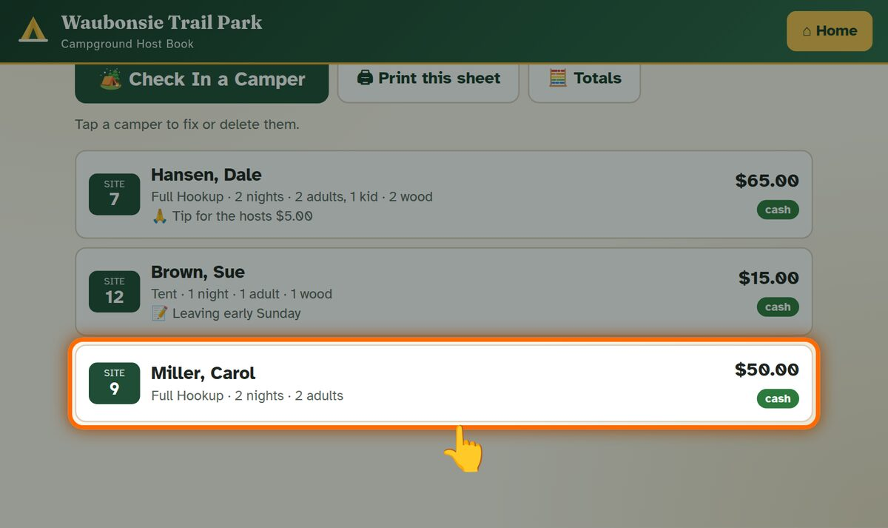
End of the day
$
Tap “Totals & Deposit”It adds up every site type, wood, cleaning, donations, and the grand total, just like the bottom of the paper sheet. Count your cash and checks and type the amount. It says “It matches!” or tells you if you're over or short. Tap Print for a paper copy.
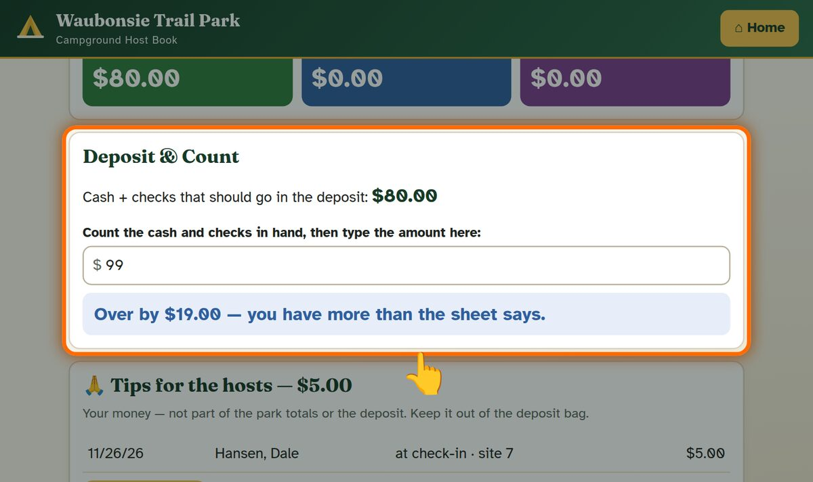
Tips
🙏
Tap “Log a Tip” on the home screenType the amount (and who left it, if you like) and tap Save Tip. Tips are your money: they show on the Totals page but are kept out of the park totals and the deposit, so keep them out of the deposit bag.
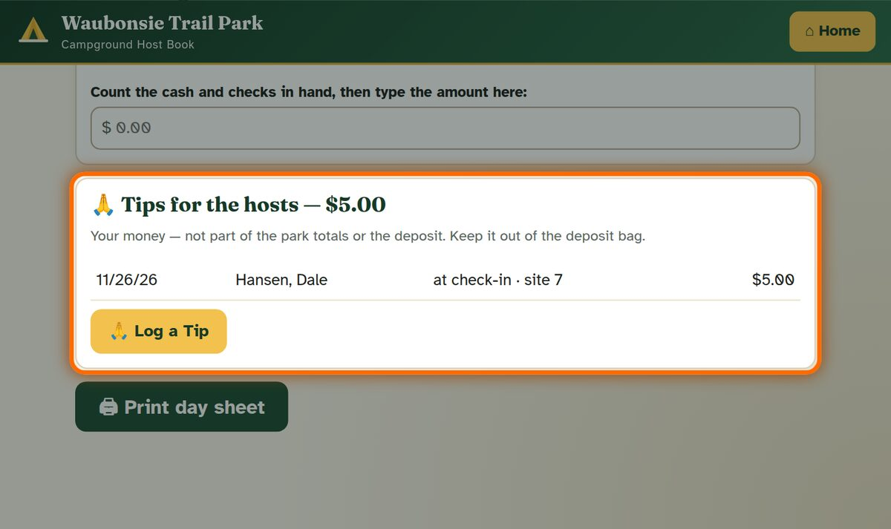
Once a week: save a backup
💾
Prices & Backup → “Save a Backup”This saves a copy (photos included) in the tablet's Downloads folder. If the tablet ever breaks, that file brings everything back.
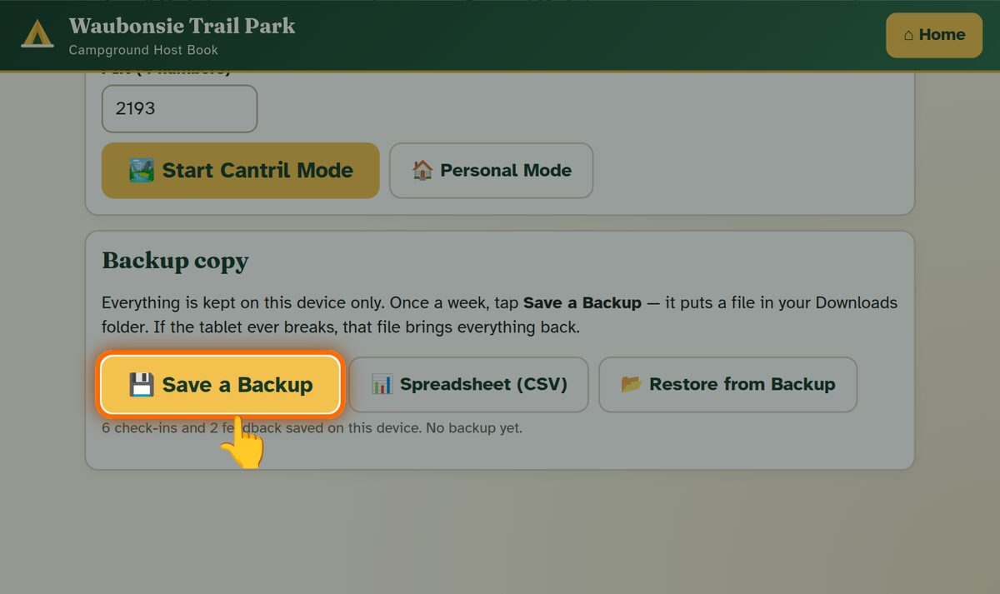
Want to practice?
🎓
Practice ModeTap the Practice Mode button on the home screen. It has pretend campers, check photos and a messy cabin, so try anything. Tap Start Over to reset it, or Go to Real Book when you're done. Practice never touches the real book.
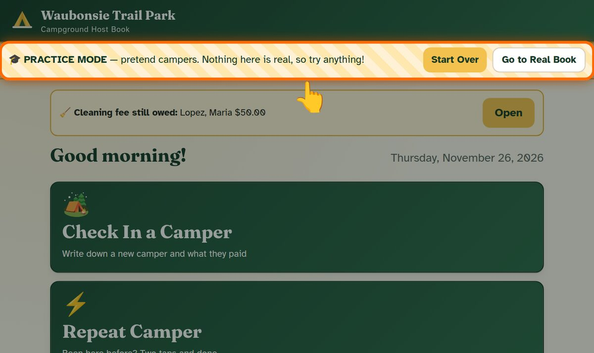
🏠 Stuck? Tap the yellow ⌂ Home button at the top to go back to the home screen and start again.